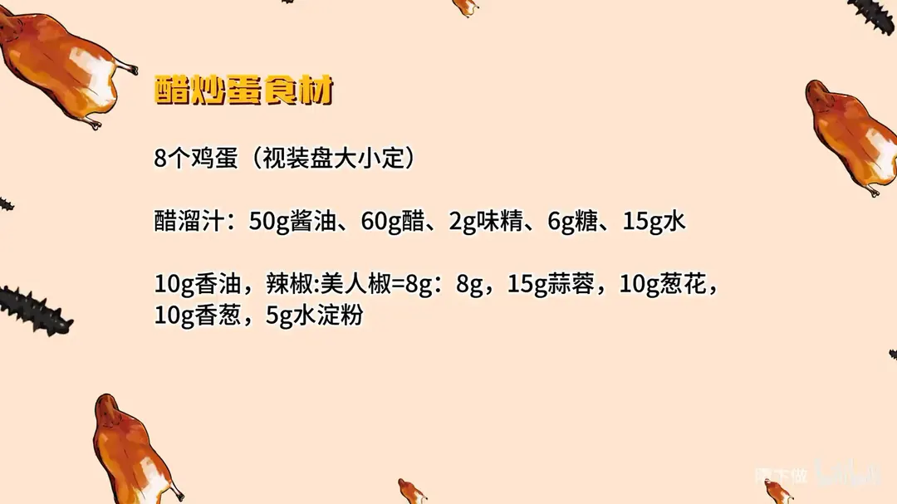
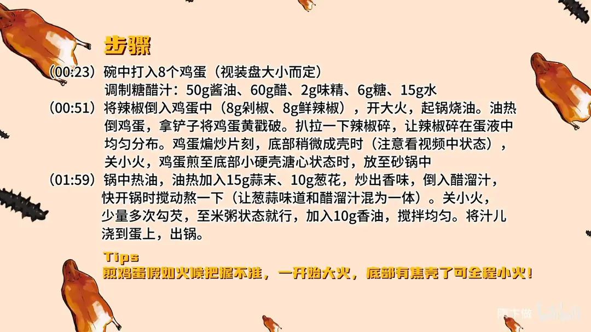

醋炒蛋
隋卞一做。8 个鸡蛋加 8g 剁椒、8g 鲜辣椒同炒，关键是把蛋黄戳破、辣椒碎拌匀。糖醋汁用 50g 酱油、60g 醋、6g 糖、2g 味精、15g 水，小火少量多次勾芡到米粥状，加 10g 香油浇在蛋上。
原视频：https://www.bilibili.com/video/BV14A4m1c7Gs
食材
鸡蛋、剁椒、鲜辣椒 等 13 样
| 类别 | 用料 | 用量 |
|---|---|---|
| 主料 | 鸡蛋 | 8个（视装盘大小定） |
| 配料 | 剁椒 | 8g |
| 配料 | 鲜辣椒 | 8g |
| 配料 | 蒜末 | 15g |
| 配料 | 葱花 | 10g |
| 配料 | 香葱 | 10g |
| 调料 | 酱油 | 50g |
| 调料 | 醋 | 60g |
| 调料 | 味精 | 2g |
| 调料 | 糖 | 6g |
| 调料 | 水 | 15g |
| 调料 | 香油 | 10g |
| 调料 | 水淀粉 | 5g |
步骤
- 打蛋调汁：碗中打入 8 个鸡蛋（视装盘大小而定）。另取一碗调糖醋汁：50g 酱油、60g 醋、2g 味精、6g 糖、15g 水，搅匀备用。
- 煎蛋：把 8g 剁椒、8g 鲜辣椒倒入蛋液中。开大火，起锅烧油，油热后倒入鸡蛋，拿铲子把蛋黄戳破，扒拉一下辣椒碎，让辣椒碎在蛋液中均匀分布。鸡蛋煸炒片刻、底部稍微成壳时关小火，煎至底部有小硬壳、蛋黄仍溏心的状态，盛出放入砂锅中。
- 熬汁浇蛋：锅中热油，油热后加入 15g 蒜末、10g 葱花炒出香味，倒入糖醋汁，快开锅时搅动熬一下，让葱蒜味和醋溜汁融为一体。关小火，少量多次勾芡，至米粥状态，加入 10g 香油搅拌均匀。将汁儿浇到蛋上，撒 10g 香葱，出锅。
小贴士
- 煎鸡蛋假如火候把握不准，一开始用大火，底部有焦壳了就可以全程小火。
讲解要点
难度：★☆☆☆☆（难点是煎蛋的火候和芡的稀稠，其余靠一碗兑好的汁）
为什么这么做
- 鸡蛋不打散：整颗下锅再戳破蛋黄，煎出来下面一层薄脆壳、上面还是嫩的，口感有层次。
- 剁椒和鲜辣椒一半一半：剁椒给咸香、鲜辣椒给清香辣，两种一起还能压住蛋腥。
- 先大火后小火：大火让底部迅速结壳定型，一成形就转小火，蛋黄才慢慢溏心。
- 蛋黄半流就起锅：余温和后面的热汁还会继续加热，煎老了就发干。
- 醋汁先兑好：酱油、醋、糖、味精、水按比例兑好，酸甜咸一次到位，也是万能醋溜汁。
- 汁要熬一下再勾芡：让葱蒜的味跑到汁里、和醋味混为一体；不熬直接勾芡，味是散的。
- 小火用铲子少量多次勾芡：铲子比勺子搅得匀，小火不结块，到稠米粥状态就停。
容易翻车
- 油要烧热再倒蛋，油凉蛋会粘锅、摊不开。
- 一开始大火，底部一出小硬壳立刻转小火，全程大火蛋黄就老了。
- 勾芡一定换小火、用铲子快搅，大火勾芡会结疙瘩。
- 芡勾得太稠会糊嘴，米粥状态就够，下香油后再搅匀。
- 糖只为提鲜，放多了就成糖醋口，不是醋溜口了。
热评补充
- 有网友试过在醋炒蛋里加豆豉和紫苏叶，香味更足，是湖南菜馆的做法。
原片尾卡


原片文案
AI 字幕校准稿
中午的视频你们看了吗？晚上就让你们学上，这就是「随便」的速度。来吧，醋炒蛋。
先打鸡蛋，八个吧——因为我这盘比较大，就八个蛋。打完之后鸡蛋不用搅，直接倒就行。另调一个醋汁：酱油、醋、糖、味精、水，具体的比例放到片尾，就这么简单。
这个汁你做个什么醋溜木须之类的都可以。然后把辣椒倒进鸡蛋里边，这里边是一半的剁椒、一半的鲜辣椒。
点火，干净的锅来点底油。鸡蛋不用打，直接倒里边，然后拿铲子把鸡蛋的蛋黄给它戳破，就像煎太阳蛋一样单面煎，让辣椒在蛋里边均匀地分布，扒拉扒拉，这阵是大火。
你看这底要成壳了、要出壳了、开始飘动了，就关小火，让它慢慢成熟。如果家里这个火候把握不准的，全程小火也可以。一开始大火煎成这样就可以了，看这个表面的蛋黄还有点半流的状态就可以，然后给它搁到砂锅里面装盘。
锅里加入蒜末、葱花，炒出香味，把醋汁倒进去，烧开、要开锅，要稍微熬一下，让这个葱蒜的味道跑到汁里面去，让他们混为一体，定一下味。
然后勾芡。勾芡的时候换小火——铲子比勺子搅得快、搅得均匀，所以就要用小火，勾到那种稠的米粥的状态就可以了。点香油，把汁浇在蛋上，砂锅撒上葱花，完美。
来一口，好嫩。下面一个很薄的小脆壳，同时上面的蛋还是嫩的，好软好嫩。而且这个酸的味道跟鸡蛋特别合，一点点酸和辣，正好把鸡蛋本身那一点点腥也给它折掉了。
这已经很像了，基本上 90% 朝上。这个汁你可以做醋溜鱼、醋溜白菜，包括醋溜木须、醋溜鸡蛋都可以，反正它是一个万能的醋溜汁。只要把这个醋溜汁调好，这个菜 3 分钟就能做好，在家试一下吧。